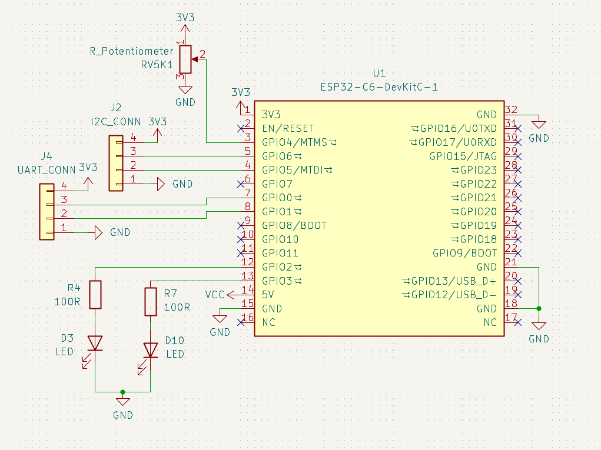
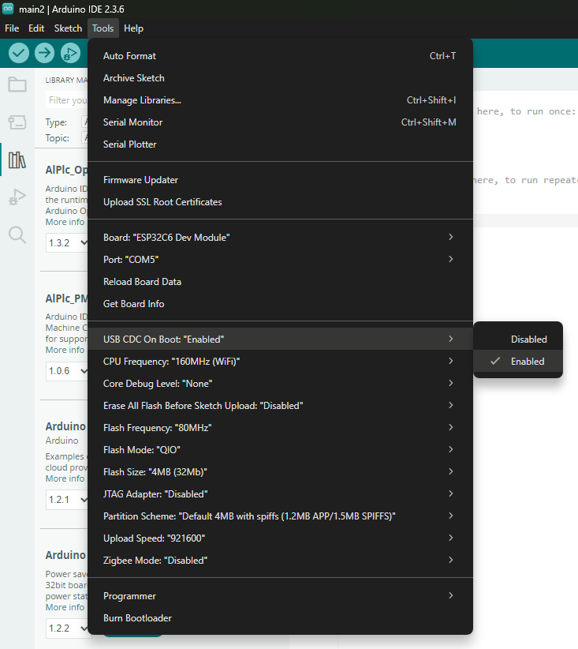
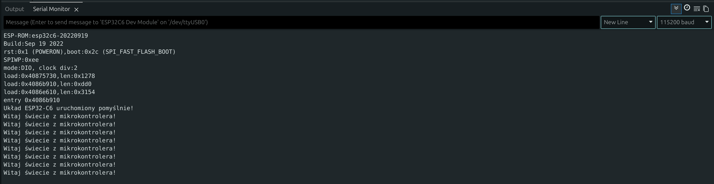
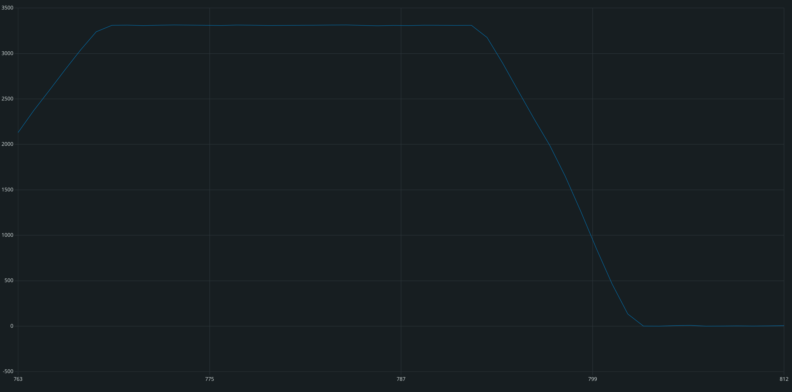
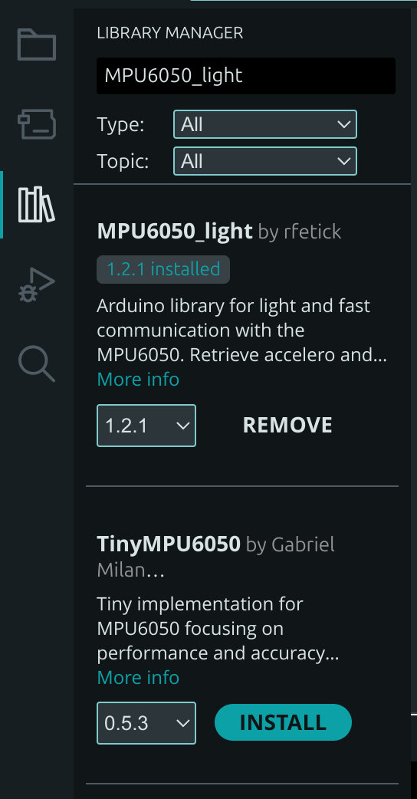

Podstawy programowania mikrokontrolerów
CZĘŚĆ 1: Sprzęt i przygotowanie do pracy
1. ESP32-C6 i dedykowana płytka
Podczas tych zajęć będziemy korzystać z układu ESP32-C6. Jest to mikrokontroler oparty na otwartej architekturze RISC-V, który posiada wbudowaną obsługę łączności bezprzewodowej: Wi-Fi 6, Bluetooth LE oraz protokołów Smart Home (Zigbee / Thread). Układ posiada również szereg innych zaawansowanych peryferiów. Wykorzystamy między innymi wbudowany przetwornik ADC, który pozwala mierzyć napięcie (np. z potencjometru). Ponadto układ obsługuje popularne standardy komunikacji, takie jak SPI, I2C oraz UART, co pozwala mu "rozmawiać" z niemal każdym zewnętrznym sensorem czy modułem dostępnym na rynku.
Ważne!
Jak czytać schemat i odnaleźć numery pinów? Początkujący często próbują wpisywać w kodzie fizyczne numery nóżek samego układu scalonego (czarnego "chipu"). To błąd! W programie zawsze posługujemy się numerami portów GPIO (ang. General-Purpose Input/Output).
- Wskazówka: Numery pinów GPIO są również nadrukowane (zazwyczaj jako białe napisy) na pinoutach wzdłuż krawędzi płytki, obok otworów do lutowania.
Dla ciekawskich
Strapping Pins - niektóre piny (np. GPIO8, GPIO9) mają specjalne znaczenie podczas startu układu (tzw. strapping pins). Jeśli podłączymy do nich coś, co wymusi na nich konkretny stan w momencie włączania zasilania, mikrokontroler może nie wystartować poprawnie lub wejść w tryb programowania.
Poniżej znajduje się schemat naszej zestawowej płytki edukacyjnej:

Analizując schemat, możemy odczytać, do których pinów GPIO podłączone są poszczególne elementy. To właśnie te numery wpiszemy w naszym kodzie:
| Element na płytce | Oznaczenie na schemacie | Numer pinu w kodzie (GPIO) | Opis |
|---|---|---|---|
| Dioda LED 1 | D3 LED |
2 | Wyjście cyfrowe / PWM (stan wysoki włącza diodę) |
| Dioda LED 2 | D10 LED |
3 | Wyjście cyfrowe / PWM |
| Potencjometr | RV5K1 |
4 | Wejście analogowe (pomiar napięcia ADC) |
| Złącze I2C | J2 I2C_CONN |
5 (SDA), 6 (SCL) | Cyfrowa magistrala do czujników (np. MPU6050) |
| Złącze UART | J4 UART_CONN |
0 (TX), 1 (RX) | Linie komunikacji szeregowej z drugim ESP |
Inne
Pozostałe piny na schemacie, które są oznaczone symbolem X, nie będą wykorzystywane w tym kursie.
2. Podłączenie płytki i konfiguracja portu USB
Aby rozpocząć pracę, płytkę łączymy z komputerem za pomocą kabla podłączonego do portu USB.
Dla układu ESP32-C6 istotne jest prawidłowe skonfigurowanie portu komunikacyjnego w środowisku Arduino IDE. Abyśmy mogli poprawnie odbierać komunikaty przesyłane z mikrokontrolera na ekran komputera, musimy włączyć obsługę wbudowanego kontrolera USB CDC.
W tym celu po wybraniu odpowiedniej płytki w menu Narzędzia (Tools) odnajdujemy opcję USB CDC On Boot i ustawiamy ją na Enabled:

Pamiętaj!
Jeśli opcja ta pozostanie wyłączona (Disabled), mikrokontroler nie będzie w stanie przesyłać tekstowych wiadomości do komputera przez port USB za pomocą instrukcji Serial.println().
CZĘŚĆ 2: Podstawy struktury programu w Arduino IDE
Każdy program pisany w środowisku Arduino (nazywany szkicem / sketchem) składa się z dwóch głównych bloków (funkcji):
void setup() {
// Ten kod wykonuje się tylko RAZ, zaraz po włączeniu zasilania
// lub wciśnięciu przycisku RESET.
// Tutaj konfigurujemy piny, uruchamiamy porty komunikacyjne itp.
}
void loop() {
// Ten kod wykonuje się w NIESKOŃCZONĄ PĘTLĘ (z góry na dół i od nowa).
// Tutaj umieszczamy główną logikę programu, odczyty z czujników,
// sterowanie diodami itp.
}
CZĘŚĆ 3: Ćwiczenia Praktyczne
Ćwiczenie 1: „Witaj świecie!” – Wysłanie wiadomości do komputera
Mikrokontroler nie posiada własnego monitora. Aby dowiedzieć się, co dzieje się wewnątrz układu, używamy Portu Szeregowego (Serial Port) do przesyłania tekstowych wiadomości przez kabel USB do komputera. W pierwszym ćwiczeniu wgrywamy kompletny kod, aby upewnić się, że połączenie z płytką działa poprawnie.
Kod do wgrania:
void setup() {
// Uruchomienie komunikacji z prędkością 115200 bitów na sekundę
Serial.begin(115200);
// Wysłanie pojedynczej wiadomości po uruchomieniu
Serial.println("Układ ESP32-C6 uruchomiony pomyślnie!");
}
void loop() {
// Wysyłanie wiadomości co sekundę
Serial.println("Witaj świecie z mikrokontrolera!");
// Opóźnienie programu o 1000 milisekund (1 sekunda)
delay(1000);
}
Wskazówka
Jak zobaczyć wynik?
- Wgraj program na płytkę.
- W Arduino IDE kliknij ikonę lupy w prawym górnym rogu (lub użyj skrótu
Ctrl + Shift + M), aby otworzyć Monitor Portu Szeregowego (Serial Monitor). - Upewnij się, że w dolnym rogu okna wybrano prędkość 115200 baud.
Dla ciekawskich
Co to jest baud?
Prędkość baud (bod) określa, ile symboli (bitów danych) jest przesyłanych w ciągu jednej sekundy. Ustawienie 115200 baud oznacza szybką komunikację. Ważne jest, aby prędkość ustawiona w kodzie (Serial.begin) była identyczna z tą wybraną w Monitorze Szeregowym – inaczej zamiast tekstu zobaczysz "krzaki" lub dziwne znaki.

Zadanie do samodzielnego wykonania:
Dodaj w pętli loop() drugą instrukcję Serial.println(...) z dowolnym własnym tekstem (np. Twoim imieniem), aby mikrokontroler co sekundę wysyłał na ekran dwulinijkowy komunikat.
Ćwiczenie 2: Sterowanie wyjściem cyfrowym – Miganie diodą
W tym ćwiczeniu nauczymy się sterować elementem fizycznym. Wyjście cyfrowe mikrokontrolera może przyjąć dwa stany:
- HIGH (stan wysoki): na pinie pojawia się napięcie 3.3V – dioda świeci.
- LOW (stan niski): napięcie spada do 0V (połączenie z masą) – dioda gaśnie.
Z naszego schematu wiemy, że dioda D3 podłączona jest do pinu GPIO2. Funkcja digitalWrite(pin, stan) pozwala ustawić żądany stan na wybranym pinie.
Uzupełnij kod i wgraj na płytkę:
// Definiujemy stałą z numerem pinu, aby kod był czytelniejszy
const int PIN_LED1 = 2;
void setup() {
// Konfigurujemy pin 2 jako WYJŚCIE (OUTPUT)
pinMode(PIN_LED1, OUTPUT);
}
void loop() {
// UZUPEŁNIJ: Włącz diodę podając stan wysoki (HIGH) na PIN_LED1
delay(500); // Odczekanie pół sekundy (500 ms)
// UZUPEŁNIJ: Wyłącz diodę podając stan niski (LOW) na PIN_LED1
delay(500); // Odczekanie pół sekundy
}
Zadanie do samodzielnego wykonania:
Na płytce znajduje się druga dioda (D10) podłączona do pinu GPIO3. Zmodyfikuj program tak, aby uzyskać efekt naprzemiennego migania obu diod (gdy jedna się zapala, druga natychmiast gaśnie).
Ćwiczenie 3: Płynna regulacja jasności – Sygnał PWM
Wyjście cyfrowe daje nam tylko opcje włącz/wyłącz. Co jeśli chcemy płynnie regulować jasność diody? Wykorzystujemy technikę PWM (Pulse Width Modulation). Polega ona na bardzo szybkim włączaniu i wyłączaniu pinu. Zmieniając stosunek czasu włączenia do wyłączenia, ludzkie oko uśrednia ilość światła i widzi płynną zmianę jasności.
W Arduino służy do tego funkcja analogWrite(pin, wartość), gdzie wartość to liczba od 0 (całkowicie zgaszona) do 255 (maksymalna jasność).
Uzupełnij kod i wgraj na płytkę:
const int PIN_LED1 = 2;
void setup() {
pinMode(PIN_LED1, OUTPUT);
}
void loop() {
// Pętla stopniowo zwiększająca zmienną 'jasnosc' od 0 do 255
for (int jasnosc = 0; jasnosc <= 255; jasnosc++) {
// UZUPEŁNIJ: Użyj odpowiedniej funkcji, aby ustawić jasność PIN_LED1
delay(10); // Krótkie opóźnienie dla płynnego animowania
}
// Pętla stopniowo zmniejszająca zmienną 'jasnosc' od 255 do 0
for (int jasnosc = 255; jasnosc >= 0; jasnosc--) {
// UZUPEŁNIJ: Ponownie użyj odpowiedniej funkcji dla opadającej wartości
delay(10);
}
}
Zadanie do samodzielnego wykonania (Diody w przeciwfazie):
Podłącz drugą diodę (const int PIN_LED2 = 3; w nagłówku oraz pinMode w setup).
Uzyskaj efekt, w którym gdy jedna dioda się rozjaśnia, druga w tym samym czasie płynnie gaśnie.
Podpowiedź
Wewnątrz istniejących pętlifor dopisz sterowanie drugą diodą tak, aby jej jasność wynosiła zawsze 255 - jasnosc.
Ćwiczenie 4: Wejście analogowe – Odczyt z potencjometru
Świat fizyczny jest analogowy (temperatura, oświetlenie czy położenie gałki zmieniają się płynnie). Aby mikrokontroler mógł odczytać płynne napięcie z potencjometru, wykorzystuje wbudowany moduł ADC (Przetwornik Analogowo-Cyfrowy).
Potencjometr na naszej płytce działa jak dzielnik napięcia i w zależności od obrotu podaje na pin GPIO4 napięcie od 0V do 3.3V. Przetwornik ADC w ESP32 zamienia to napięcie na liczbę z zakresu od 0 do 4095 (rozdzielczość 12-bitowa). Służy do tego funkcja analogRead(pin).
Notatka
Jak działa funkcja map()?
Zanim uzupełnisz kod, warto poznać funkcję map(). Pozwala ona proporcjonalnie przeskalować wartość z jednego zakresu na inny (np. z 0-4095 na 0-255). Przyjmuje 5 parametrów:
map(wartość_wejściowa, min_wejście, max_wejście, min_wyjście, max_wyjście)
W naszym przykładzie: bierze odczytaną z potencjometru liczbę od 0 do 4095 i zamienia ją na odpowiednią wartość PWM od 0 do 255.
Uzupełnij kod i wgraj na płytkę:
const int PIN_POTENCJOMETR = 4;
const int PIN_LED = 2;
void setup() {
Serial.begin(115200);
pinMode(PIN_LED, OUTPUT);
// Piny analogowe nie wymagają ustawiania pinMode jako INPUT
}
void loop() {
// UZUPEŁNIJ: Odczytaj wartość z potencjometru za pomocą odpowiedniej funkcji i zapisz ją w zmiennej "odczyt"
int odczyt = ;
// Wypisanie wyniku do Serial Monitora
Serial.println(odczyt);
// UZUPEŁNIJ: Przeskaluj zakres odczytu ADC (0-4095) na zakres jasności PWM (0-255)
int jasnosc = map(/* TUTAJ WPISZ ARGUMENTY FUNKCJI */);
analogWrite(PIN_LED, jasnosc);
delay(50);
}
Wskazówka
Narzędzie Serial Plotter Zamiast czytać suche liczby, otwórz w Arduino IDE menu Narzędzia -> Kreślarka portu szeregowego (Serial Plotter). Pokręć potencjometrem, a zobaczysz piękny, rysowany na żywo wykres zmian napięcia!

Zadanie do samodzielnego wykonania (Termostat / Próg alarmowy):
Często odczyt z czujnika nie służy do płynnej regulacji, lecz do załączania ostrzeżenia po przekroczeniu pewnego progu. Zmodyfikuj program tak, aby całkowicie usunąć analogWrite oraz map(), a zamiast tego użyć instrukcji warunkowej if ... else:
- Jeśli odczytana wartość z potencjometru jest większa niż 3000, włącz diodę LED (stan
HIGH). - W przeciwnym wypadku (odczyt ≤ 3000), wyłącz diodę (stan
LOW).
Ćwiczenie 5: Magistrala I2C i zaawansowany czujnik MPU6050
Gdy chcemy podłączyć zaawansowane cyfrowe czujniki (np. wyświetlacze OLED, czujniki ciśnienia czy sensory ruchu), używamy magistrali I2C. Wykorzystuje ona tylko dwa przewody:
- SDA (Serial Data): linia przesyłania danych.
- SCL (Serial Clock): linia zegarowa synchronizująca przesył.
Na jednym zestawie przewodów można podłączyć wiele urządzeń, ponieważ każde z nich ma swój unikalny adres cyfrowy. Nasze złącze J2 podłączone jest do pinów 5 (SDA) oraz 6 (SCL).
Podłączymy do niego moduł MPU6050 (zawierający 3-osiowy akcelerometr oraz żyroskop, używany między innymi w dronach do stabilizacji lotu).
Instalacja biblioteki:
Zanim napiszemy kod, musimy zainstalować bibliotekę, która ułatwi nam komunikację z czujnikiem.
- W Arduino IDE wybierz: Szkic -> Dołącz bibliotekę -> Zarządzaj bibliotekami...
- Wyszukaj: MPU6050_light (autor: rfetick).
- Kliknij Zainstaluj.

Kod odczytu w pętli loop():
#include <Wire.h>
#include <MPU6050_light.h>
// Tworzymy obiekt reprezentujący nasz czujnik
MPU6050 mpu(Wire);
// Definicja naszych pinów I2C ze schematu
const int I2C_SDA = 5;
const int I2C_SCL = 6;
void setup() {
Serial.begin(115200);
// Konfiguracja magistrali I2C na naszych konkretnych pinach
Wire.begin(I2C_SDA, I2C_SCL);
Serial.println("Inicjalizacja czujnika MPU6050...");
byte status = mpu.begin();
if (status != 0) {
Serial.println("Błąd połączenia z MPU6050! Sprawdź połączenia.");
while (1); // Zatrzymanie programu w przypadku błędu
}
Serial.println("Czujnik wykryty! Nie ruszaj płytką - trwa kalibracja...");
delay(1000);
mpu.calcOffsets(); // Kalibracja początkowego położenia
Serial.println("Kalibracja zakończona!");
}
void loop() {
// Pobranie najnowszych pomiarów z czujnika
mpu.update();
// Odczyt kątów nachylenia w osiach X i Y
Serial.print("Kat X: ");
Serial.print(mpu.getAngleX());
Serial.print("\tKat Y: ");
Serial.println(mpu.getAngleY());
delay(100);
}
Zadanie do samodzielnego wykonania (Czarna skrzynka / Wykrywacz wstrząsu):
Zmieńmy koncepcję: zamiast badać powolny przechył, stwórzmy układ reagujący na gwałtowne przeciążenia (np. wykrywanie kolizji robota lub uderzenia).
Czujnik MPU6050 za pomocą akcelerometru stale mierzy przyśpieszenie w trzech osiach. Biblioteka udostępnia do tego gotowe metody mpu.getAccX(), mpu.getAccY() oraz mpu.getAccZ() (wartość 1.0 oznacza standardowe przyśpieszenie ziemskie 1g).
- Dopisz w pętli
loop()warunek sprawdzający, czy przyśpieszenie w osi X lub Y przekroczyło próg2.0(silny wstrząs/uderzenie). - Jeśli wstrząs zostanie wykryty, natychmiast zapal czerwoną diodę na stałe (stan
HIGH) jako zapisaną flagę alarmową informującą o zderzeniu.
Ćwiczenie 6: Rozmowa dwóch mikrokontrolerów – Interfejs UART
Często projekty wymagają połączenia ze sobą dwóch oddzielnych układów (np. główny sterownik i moduł GPS lub komunikacja przewodowa dwóch płytek ESP). Służy do tego interfejs UART (Universal Asynchronous Receiver-Transmitter).
Wymaga on połączenia trzech linii ze złącza J4:
- Masa (GND): Płytki muszą mieć wspólną masę.
- TX (Nadajnik z ESP A) -> RX (Odbiornik w ESP B)
- RX (Odbiornik w ESP A) -> TX (Nadajnik w ESP B)
Pamiętaj o skrzyżowaniu linii!
Piny nadawcze (TX) zawsze łączymy z pinami odbiorczymi (RX) drugiego urządzenia. Połączenie TX-TX lub RX-RX nie zadziała.
Ze schematu odczytujemy piny na złączu J4: GPIO0 (linia 3 złącza) oraz GPIO1 (linia 2 złącza). Skonfigurujemy je jako interfejs sprzętowy Serial1.
Kod dla Płytki A (Nadajnik):
Ta płytka czeka na wpisanie cyfry na klawiaturze (w Monitorze Szeregowym komputera), a następnie przesyła ją kablem do drugiej płytki.
const int UART_TX = 0;
const int UART_RX = 1;
void setup() {
// Główny port do podglądu na komputerze
Serial.begin(115200);
// Uruchomienie drugiego portu UART do komunikacji z ESP B
Serial1.begin(9600, SERIAL_8N1, UART_RX, UART_TX);
Serial.println("Nadajnik gotowy. Wpisz cyfre (0-9) w Monitorze Szeregowym!");
}
void loop() {
// Sprawdzamy, czy UŻYTKOWNIK wpisał coś na klawiaturze komputera
if (Serial.available() > 0) {
// Odczytujemy znak z klawiatury
char znak = Serial.read();
// Przesyłamy ten sam znak dalej, do drugiej płytki przez Serial1
Serial1.print(znak);
Serial.print("Wyslano do drugiej plytki: ");
Serial.println(znak);
}
}
Kod dla Płytki B (Odbiornik):
Ta płytka odbiera cyfrę i w zależności od jej wartości steruje jasnością diody.
const int PIN_LED = 2;
const int UART_TX = 0;
const int UART_RX = 1;
void setup() {
Serial.begin(115200);
Serial1.begin(9600, SERIAL_8N1, UART_RX, UART_TX);
pinMode(PIN_LED, OUTPUT);
Serial.println("Odbiornik gotowy. Czekam na dane...");
}
void loop() {
// Sprawdź, czy na porcie Serial1 nadeszły dane od Płytki A
if (Serial1.available() > 0) {
// Odczytaj odebrany znak za pomocą Serial1.read()
char odebranyZnak = Serial1.read();
Serial.print("Odebrano: ");
Serial.println(odebranyZnak);
// ZABEZPIECZENIE: Sprawdzamy, czy odebrany znak to rzeczywiście cyfra od '0' do '9'.
// Zapobiega to błędom, gdy ktoś wyśle np. literę 'd' lub znak nowej linii.
if (odebranyZnak >= '0' && odebranyZnak <= '9') {
// Konwertujemy znak na cyfrę i ustawiamy jasność diody
// (Odejmujemy kod ASCII znaku '0')
int cyfra = odebranyZnak - '0';
// Skalowamy cyfrę (0-9) na jasność PWM (0-255)
int jasnosc = map(cyfra, 0, 9, 0, 255);
analogWrite(PIN_LED, jasnosc);
}
}
}
Dla ciekawskich
Czym jest kod ASCII?
Komputery i mikrokontrolery nie rozumieją liter ani znaków – przetwarzają wyłącznie liczby. Dlatego każdy znak ma przypisaną stałą wartość liczbową w tzw. tabeli ASCII (np. znak '0' to w pamięci liczba 48, znak '1' to 49, a literka 'A' to 65).
Zapis odebranyZnak - '0' to popularny programistyczny trik: odejmując kod ASCII zera (48) od kodu ASCII odebranego znaku (np. '5', czyli 53), otrzymujemy czystą wartość liczbową: 53 - 48 = 5.
Zadanie do samodzielnego wykonania (Sterowanie komendami literowymi):
Zamiast przesyłać cyfry regulujące jasność, zmodyfikuj program Odbiornika (Płytki B) tak, aby reagował na konkretne litery działające jako polecenia:
- Jeśli odebrany znak to
'W'(Włącz), zapal diodę na stałe (digitalWrite(PIN_LED, HIGH)). - Jeśli odebrany znak to
'G'(Gaś), wyłącz diodę (digitalWrite(PIN_LED, LOW)).
Podpowiedź
Do porównania odebranych znaków użyj instrukcji warunkowej, na przykład:if (odebranyZnak == 'W') { ... } else if (odebranyZnak == 'G') { ... }.
CZĘŚĆ 4: Wprowadzenie do FreeRTOS – Prawdziwa wielozadaniowość
W klasycznym podejściu programy pisane w środowisku Arduino działają wewnątrz jednej głównej pętli loop(). Jeśli chcemy realizować kilka operacji jednocześnie, musimy tworzyć rozbudowane maszyny stanów i stale kontrolować upływ czasu za pomocą funkcji millis(). Takie rozwiązanie staje się trudne w utrzymaniu, szczególnie gdy poszczególne procesy wymagają precyzyjnego rygoru czasowego (np. bezwzględnego wywoływania kodu dokładnie co 10 ms). Istnieje jednak o wiele wygodniejsza alternatywa:
Układ ESP32-C6 natywnie działa pod kontrolą systemu operacyjnego czasu rzeczywistego FreeRTOS (Free Real-Time Operating System). System ten posiada planistę (schedulera), który potrafi przełączać kontekst wykonania i przydzielać czas procesora do niezależnych bloków kodu, nazywanych Zadaniami (Tasks). Każde zadanie posiada własny stos pamięci oraz przypisany priorytet.
Wyzwania programowania współbieżnego
Dzielenie czasu procesora pomiędzy różne zadania daje ogromne możliwości, ale wprowadza również specyficzne dla systemów wielozadaniowych problemy architektoniczne, które programista musi wziąć pod uwagę:
Race Condition (Wyścig)
Sytuacja, w której dwa lub więcej zadań próbuje niemal jednocześnie uzyskać dostęp do tego samego, współdzielonego zasobu (np. modyfikować tę samą zmienną globalną lub zapisywać dane do jednego portu komunikacyjnego) bez odpowiedniej synchronizacji.
Ostateczny wynik operacji staje się nieprzewidywalny i zależy od tego, które zadanie akurat zostało wstrzymane lub wznowione przez planistę. Aby temu zapobiec, stosuje się mechanizmy blokujące dostęp innym zadaniom na czas operacji, np. Muteksy (Mutex).
Deadlock (Zakleszczenie)
Krytyczny błąd w programie współbieżnym, w którym dwa lub więcej zadań blokuje się nawzajem w nieskończoność.
Dochodzi do tego, gdy Zadanie A zablokowało dostęp do Zasobu X i czeka na zwolnienie Zasobu Y, podczas gdy Zadanie B posiada zablokowany Zasób Y i nieskończenie czeka na zwolnienie Zasobu X. W efekcie oba zadania zamrażają swoje działanie na stałe.
Ćwiczenie 7: Niezależne zadania migania diodami
W tym ćwiczeniu zrezygnujemy z kodu w pętli loop(). Zaimplementujemy dwa oddzielne zadania: jedno będzie sterować diodą LED1, a drugie diodą LED2. Każde z zadań będzie działać z zupełnie innym opóźnieniem.
Uzupełnij kod i wgraj na płytkę:
const int PIN_LED1 = 2;
const int PIN_LED2 = 3;
// Nagłówki naszych funkcji zadań
void TaskDioda1(void *pvParameters);
void TaskDioda2(void *pvParameters);
void setup() {
Serial.begin(115200);
// Konfiguracja pinów
pinMode(PIN_LED1, OUTPUT);
pinMode(PIN_LED2, OUTPUT);
// Tworzenie Zadania 1
xTaskCreate(
TaskDioda1, // Funkcja realizująca kod zadania
"ZadanieLED1", // Nazwa zadania
1024, // Rozmiar stosu w bajtach, zazwyczaj potęga 2
NULL, // Parametry wejściowe
1, // Priorytet (1 - niski)
NULL // Uchwyt
);
// UZUPEŁNIJ: Utwórz Zadanie 2 (TaskDioda2) o nazwie "ZadanieLED2", z priorytetem 1
xTaskCreate(
);
Serial.println("Zadania FreeRTOS uruchomione!");
}
void loop() {
// Pętla główna pozostaje pusta - zadania działają w tle
vTaskDelete(NULL);
}
// ================= IMPLEMENTACJA ZADAŃ =================
void TaskDioda1(void *pvParameters) {
// Nieskończona pętla zadania
for (;;) {
digitalWrite(PIN_LED1, HIGH);
// Makro pdMS_TO_TICKS przelicza czas w milisekundach na tzw. ticki (takty) planisty.
// Ticki to bazowe jednostki czasu, w jakich FreeRTOS odmierza działanie systemu
vTaskDelay(pdMS_TO_TICKS(200));
digitalWrite(PIN_LED1, LOW);
vTaskDelay(pdMS_TO_TICKS(200));
}
}
void TaskDioda2(void *pvParameters) {
for (;;) {
digitalWrite(PIN_LED2, HIGH);
// UZUPEŁNIJ: Ustaw inne opóźnienie, np. 555 milisekund
vTaskDelay();
digitalWrite(PIN_LED2, LOW);
// UZUPEŁNIJ: Ustaw opóźnienie, np. 555 milisekund
vTaskDelay();
}
}
Zadanie do samodzielnego wykonania:
Stwórz w programie trzecie zadanie (np. TaskLicznik), które posiada wyższy priorytet (2) i w nieskończonej pętli co sekundę wypisuje na port szeregowy kolejną liczbę (licznik sekund). Zaobserwuj w Monitorze Szeregowym, w jaki sposób FreeRTOS współdzieli czas procesora dla wszystkich trzech procesów.
Ciekawostka
Pętla loop() to również zadanie!
Warto wiedzieć, że w środowisku programistycznym dla układów ESP32 standardowe funkcje setup() oraz loop() pod spodem nie działają "magicznie" poza systemem. Środowisko automatycznie tworzy dla nich domyślne zadanie FreeRTOS o nazwie loopTask i priorytecie 1. Pisząc zwykły kod w Arduino, od zawsze programowałeś wewnątrz zadania FreeRTOS, nawet o tym nie wiedząc! Właśnie dlatego w naszym kodzie mogliśmy bezpiecznie usunąć to domyślne zadanie za pomocą instrukcji vTaskDelete(NULL), zwalniając przydzieloną mu pamięć.
Task Watchdog Timer (TWDT)
Dlaczego zadanie bez opóźnienia resetuje płytkę?
W systemie FreeRTOS dla układów ESP32 stale czuwa wbudowany mechanizm nadzorcy – Task Watchdog Timer. Jeśli stworzysz zadanie o wysokim priorytecie, które zajmie procesor w nieskończonej pętli for(;;) lub while(1) bez wywołania funkcji oddającej czas planiście (takiej jak vTaskDelay() lub yield()), planista nie internally będzie w stanie przełączyć kontekstu na inne, krytyczne zadania systemowe (np. obsługę stosu Wi-Fi).
Watchdog uzna, że program uległ zawieszeniu, i po jakimś czasie zresetuje mikrokontroler, wypisując w Monitorze Szeregowym charakterystyczny błąd: Task watchdog got triggered. Zawsze pamiętaj o dodawaniu opóźnień wewnątrz nieskończonych pętli zadań!
Ćwiczenie 8: Bezpieczna wymiana danych – Kolejki (Queues)
W profesjonalnych aplikacjach wielozadaniowych dążymy do całkowitej eliminacji zmiennych globalnych przy przekazywaniu danych między poszczególnymi zadaniami. Służą do tego Kolejki (Queues). Kolejka to bezpieczny bufor FIFO (First-In, First-Out), do którego jedno zadanie może wrzucać dane, a inne je stamtąd odbierać. Operacje na kolejce są automatycznie synchronizowane przez system, co całkowicie zabezpiecza program przed problemem Race Condition.
W tym ćwiczeniu stworzymy dwa zadania:
TaskNadajnik: Odczytuje napięcie z potencjometru (GPIO4) i bezpiecznie wysyła odczytaną wartość do kolejki za pomocą funkcjixQueueSend.TaskOdbiornik: Czeka na pojawienie się nowej wartości w kolejce za pomocą funkcjixQueueReceive. Gdy dane nadejdą, wypisuje je w Monitorze Szeregowym i steruje jasnością diody (GPIO2).
Uzupełnij kod i wgraj na płytkę:
const int PIN_LED = 2;
const int PIN_POTENCJOMETR = 4;
// Globalny uchwyt do naszej kolejki przechowującej liczby całkowite (int)
QueueHandle_t kolejkaDanych;
void TaskNadajnik(void *pvParameters);
void TaskOdbiornik(void *pvParameters);
void setup() {
Serial.begin(115200);
pinMode(PIN_LED, OUTPUT);
// Tworzenie kolejki mogącej pomieścić maksymalnie 5 elementów typu int
kolejkaDanych = xQueueCreate(5, sizeof(int));
if (kolejkaDanych == NULL) {
Serial.println("Blad: Nie udalo sie utworzyc kolejki!");
return;
}
// Tworzenie zadania nadawczego
xTaskCreate(TaskNadajnik, "Nadajnik", 2048, NULL, 1, NULL);
// Tworzenie zadania odbiorczego z wyższym priorytetem
xTaskCreate(TaskOdbiornik, "Odbiornik", 2048, NULL, 2, NULL);
Serial.println("Zadania z kolejka uruchomione!");
}
void loop() {
vTaskDelete(NULL);
}
void TaskNadajnik(void *pvParameters) {
for (;;) {
// Odczyt wartości z przetwornika ADC (potencjometr)
int odczyt = analogRead(PIN_POTENCJOMETR);
// UZUPEŁNIJ: Wyślij adres zmiennej '&odczyt' do kolejki 'kolejkaDanych'.
xQueueSend(
/* 1. Uchwyt kolejki */,
/* 2. Wskaźnik na wysyłane dane */,
/* 3. Czas oczekiwania (np. portMAX_DELAY) */
);
// Pobieraj próbkę co 100 milisekund
vTaskDelay(pdMS_TO_TICKS(100));
}
}
void TaskOdbiornik(void *pvParameters) {
int odebranaWartosc;
for (;;) {
// UZUPEŁNIJ: Odbierz dane z kolejki 'kolejkaDanych' i zapisz pod adresem '&odebranaWartosc'.
// Funkcja xQueueReceive zablokuje zadanie w oczekiwaniu na dane.
if (xQueueReceive(
/* 1. Uchwyt kolejki */,
/* 2. Wskaźnik na bufor odbiorczy */,
/* 3. Czas oczekiwania (np. portMAX_DELAY) */
) == pdPASS) {
Serial.print("Odebrano z kolejki: ");
Serial.println(odebranaWartosc);
// Skalowanie odczytu (0-4095) na jasność PWM diody (0-255)
int jasnosc = map(odebranaWartosc, 0, 4095, 0, 255);
analogWrite(PIN_LED, jasnosc);
}
}
}
Zadanie do samodzielnego wykonania:
Spróbuj zmienić rozmiar kolejki przy tworzeniu (xQueueCreate) na 1 i zaobserwuj w Monitorze Szeregowym, czy wpływa to na płynność przekazywania danych. Następnie zmodyfikuj kod w funkcji TaskNadajnik dodając instrukcję warunkową, aby mikrokontroler wysyłał dane do kolejki tylko wtedy, gdy odczyt z potencjometru zmienił się o więcej niż 50 jednostek w stosunku do poprzedniego pomiaru. Pozwoli to zaoszczędzić czas procesora i nie zapychać kolejki identycznymi, powtarzającymi się wartościami!